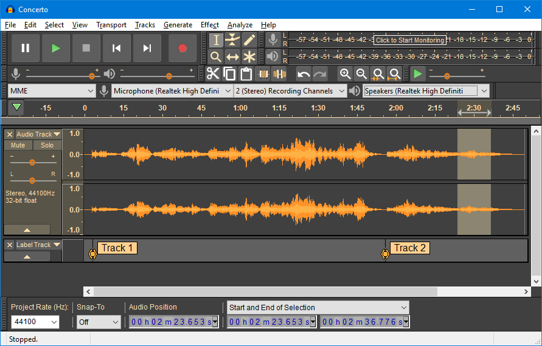
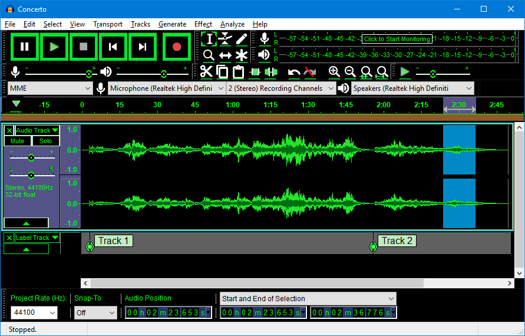
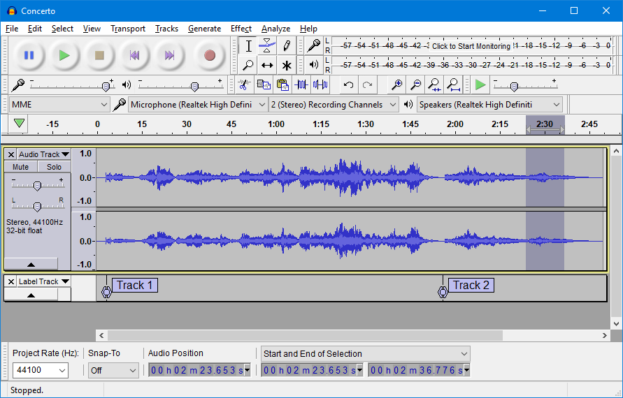

Themes
- In addition to the four pre-configured themes there is also a Custom theme. By default it looks the same as Classic theme - but, if you have the right programming skills and tools, you can use this template to create your own theme. Instuctions for how to do this may be found in the Audacity Wiki.

|
 |  |  | ||||
| Light theme | Dark theme | High Contrast theme | Classic theme |
Light
This is a light theme loosely based on the look and feel of earlier Audacity versions.
But given a contemporary twist with more modern-looking buttons and icons.
Dark
This is similar to the Light theme, with the same buttons and icons, but given a dark twist. Dark themes are quite fashionable currently.
High Contrast
Some users with poor eyesight benefit from a high contrast that is 'eye-popping' for most people. Subtle shades don't work for them.
The idea is this new theme would be used with a system theme that is high contrast black.
It is intended to work well with Windows 10 High Contrast #2, as that seems to give the largest contrast of all the black variants.
Classic
The one you know and loved. This theme is a re-creation of the look and feel of earlier Audacity versions.
It is for those who want to stick with Audacity as it always used to be.
Custom theme
The Custom theme to use can be chosen at .
By default the custom theme looks the same as Classic theme - but, if you have the right programming skills and tools, you can use this template to create your own theme. Instructions for how to do this may be found in the Audacity Wiki.